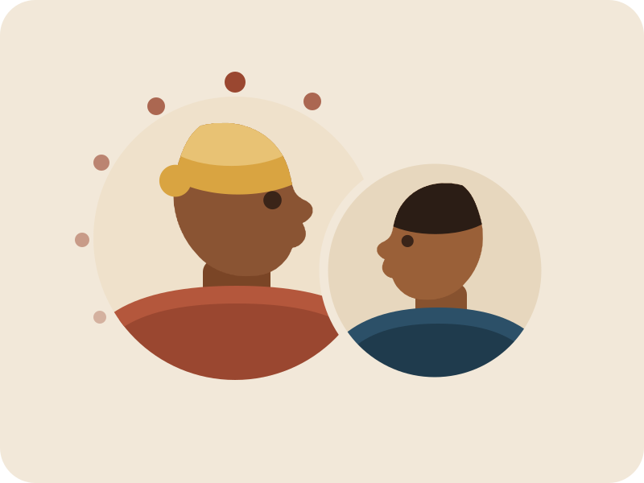

Ugonjwa wa kusahau: matunzo · msaada · elimu
Kuziba pengo kati ya utambuzi, matunzo na uelewa wa ugonjwa wa kusahau. Hakuna familia inayopaswa kukabili ugonjwa huu peke yake.
Barani Afrika, ugonjwa wa kusahau (dementia) mara nyingi hugunduliwa kwa kuchelewa. Familia nyingi hupata majibu ugonjwa ukiwa umeshaendelea sana, na walezi wengi hupata msaada mdogo. Hii hutokea kwa sababu huduma ni chache na dalili mara nyingi hudhaniwa kuwa ni uzee au laana. Mindalo inatoa taarifa zilizo wazi, msaada wa vitendo na mafunzo, kwa heshima kwa kila mtu.

Tunawezaje kukusaidia leo?
Jinsi Mindalo inavyosaidia, hatua kwa hatua
Msaada wetu unafuata safari ya ugonjwa wa kusahau kwa mpangilio ambao familia huipitia. Unaanza na wasiwasi wa kwanza, unapitia uchunguzi na matunzo nyumbani, na unamalizika kwa kujifunza katika jamii. Kila hatua inakupeleka kwenye mwongozo mfupi au huduma, ili uende moja kwa moja kwenye unachohitaji sasa. Anza na hatua inayolingana na hali yako leo.
-
Utambuzi
Tambua dalili
Jifunze mabadiliko ya kuangalia, na la kufanya ukiwa na wasiwasi.
Dalili za ugonjwa wa kusahau -
Utambuzi
Pata uchunguzi
Jua jinsi ya kumwona mhudumu wa afya, cha kubeba na maswali ya kuuliza.
Kuchunguzwa -
Msaada
Elewa ugonjwa
Jifunze ugonjwa wa kusahau ni nini, aina zake kuu, na unawapata akina nani.
Ugonjwa wa kusahau ni nini? -
Msaada
Tunza kila siku
Vidokezo vya kuzungumza, ratiba, chakula, usalama na mabadiliko ya tabia.
Matunzo ya kila siku -
Msaada
Jitunze mwenyewe
Pumzika, gawana kazi ya kutunza na pata msaada, ili uweze kuendelea.
Kujitunza
Ukweli kuhusu ugonjwa wa kusahau ni upi?
Watu wengi wamesikia mambo kuhusu ugonjwa wa kusahau ambayo si ya kweli. Wengine husema ni uzee tu, na wengine husema unasababishwa na laana. Imani hizi huleta aibu na hofu, na huzuia familia kutafuta msaada mapema. Kujua ukweli husaidia familia kuchukua hatua mapema na kutunza kwa kujiamini.
-
Watu husema“Kusahau ni sehemu ya kawaida ya kuzeeka.”
UkweliUgonjwa wa kusahau si sehemu ya kawaida ya kuzeeka. Kusahau kidogo ni jambo la kawaida tunapozeeka, lakini ugonjwa huu huzidi kadiri muda unavyokwenda na hufanya maisha ya kila siku kuwa magumu. Hii ni kwa sababu unasababishwa na ugonjwa kwenye ubongo. Matatizo ya kumbukumbu yakiathiri maisha ya kila siku, ni vizuri kupata uchunguzi.
-
Watu husema“Ugonjwa wa kusahau unasababishwa na laana au uchawi.”
UkweliUgonjwa wa kusahau ni hali ya kitabibu, si laana. Unasababishwa na magonjwa yanayoharibu ubongo, kama ugonjwa wa Alzheimer au kiharusi. Hakuna aliyejiletea yeye mwenyewe au familia yake. Mtu huyo anahitaji matunzo na upendo, si lawama.
-
Watu husema“Hakuna kinachoweza kufanyika.”
UkweliMsaada upo, ingawa bado hakuna tiba. Uchunguzi wa mapema unaweza kugundua sababu nyingine zinazotibika, na matunzo mazuri yanaweza kupunguza dalili nyingi. Kwa msaada, mtu anaweza kuendelea kufanya mambo anayoyapenda kwa muda mrefu zaidi. Watu wengi huishi vizuri na ugonjwa huu kwa miaka mingi.
-
Watu husema“Watu wenye ugonjwa wa kusahau hawaelewi chochote.”
UkweliWatu wenye ugonjwa wa kusahau bado wana hisia, kumbukumbu na mambo wanayoyapenda. Hata maneno yanapokuwa magumu, wanahisi wema, sauti na mguso. Kuwatenga kunaweza kuwafanya wajisikie wapweke na kuhuzunika. Zungumza nao, washirikishe na uwaheshimu.
Aina tofauti za ugonjwa wa kusahau
Ugonjwa wa kusahau si ugonjwa mmoja tu. Shirika la Afya Duniani linaeleza aina kadhaa, na ugonjwa wa Alzheimer ndio unaotokea zaidi, ukiwa asilimia 60–70 ya wagonjwa. Kila aina huharibu ubongo kwa njia tofauti, kwa hiyo dalili za kwanza na matunzo yanayohitajika yanaweza kutofautiana. Kujua aina husaidia familia na wahudumu wa afya kupanga matunzo yanayofaa.
Ugonjwa wa Alzheimer
Asilimia 60–70 ya wagonjwa. Aina inayotokea zaidi. Matatizo ya kumbukumbu mara nyingi ndiyo dalili ya kwanza.
Ugonjwa wa kusahau wa mishipa ya damu
Husababishwa na matatizo ya mzunguko wa damu kwenye ubongo, kwa mfano baada ya kiharusi.
Ugonjwa wa kusahau wenye Lewy bodies
Husababishwa na mrundikano usio wa kawaida wa protini ndani ya seli za neva. Unaweza kuathiri mwendo, usingizi na kuona.
Ugonjwa wa kusahau wa sehemu ya mbele ya ubongo
Kundi la magonjwa yanayoharibu sehemu ya mbele ya ubongo. Mara nyingi hubadilisha kwanza tabia, mwenendo au lugha.
Aina mchanganyiko
Aina hizi mara nyingi huingiliana, na watu wengi huwa na zaidi ya aina moja kwa wakati mmoja.
Sababu nyingine
Ugonjwa wa kusahau unaweza pia kufuata kiharusi, baadhi ya maambukizi kama VVU, matumizi mabaya ya pombe, majeraha ya kichwa yanayojirudia au lishe duni.
Chanzo: Shirika la Afya Duniani, taarifa kuhusu dementia. Soma zaidi katika mwongozo wetu: Ugonjwa wa kusahau ni nini?
Ugonjwa wa kusahau unaongezeka kwa kasi
- Milioni 57ya watu walikuwa wanaishi na ugonjwa huu duniani mwaka 2021
- Zaidi ya 60%yao wanaishi katika nchi zenye kipato cha chini na cha kati
- Karibu milioni 10ya wagonjwa wapya kila mwaka
Chanzo: Shirika la Afya Duniani, taarifa kuhusu dementia.
Ugonjwa wa kusahau unaongezeka kwa kasi zaidi mahali penye huduma chache zaidi. Watu wengi wenye ugonjwa huu sasa wanaishi katika nchi zenye kipato cha chini na cha kati, na idadi ya wazee barani Afrika inaongezeka haraka. Matunzo hayajaenda sambamba, kwa hiyo familia nyingi hupitia safari hii peke yao. Mindalo ipo kusaidia kubadilisha hali hii — familia moja, jamii moja, mazungumzo moja kwa wakati.
Fanya kazi nasi
Hatuwezi kuziba pengo hili peke yetu. Tunashirikiana na huduma za afya, vyuo vikuu, vikundi vya kijamii na vya kidini, na wafadhili. Pamoja tunaweza kufikia familia nyingi zaidi na kufunza watu wengi zaidi wanaotoa matunzo. Kama unashiriki malengo yetu, tungependa kusikia kutoka kwako.
Ukurasa huu umetafsiriwa kutoka Kiingereza. Toleo la Kiingereza ndilo la msingi. Soma kwa Kiingereza